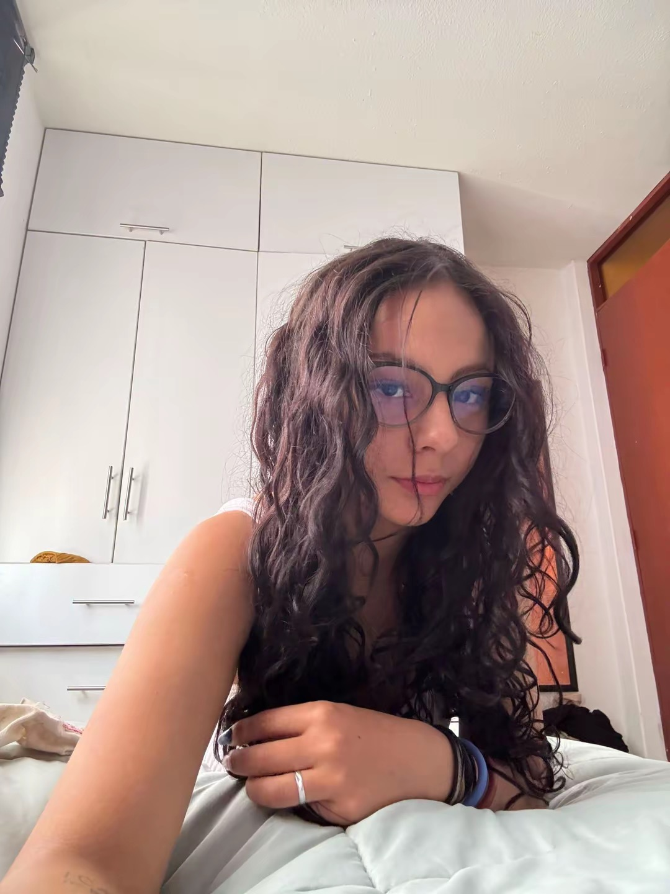

Estudiante de Administración de Empresas en la Universidad Católica San Pablo
Soy una estudiante universitaria con interés en desarrollar mis habilidades y conocimientos en el ámbito profesional. Me considero una persona responsable, creativa, organizada y comprometida, con facilidad para trabajar en equipo, aprender constantemente y afrontar nuevos desafíos. Quiero crecer profesionalmente, aportar ideas y generar un impacto positivo en cada proyecto en el que participe.